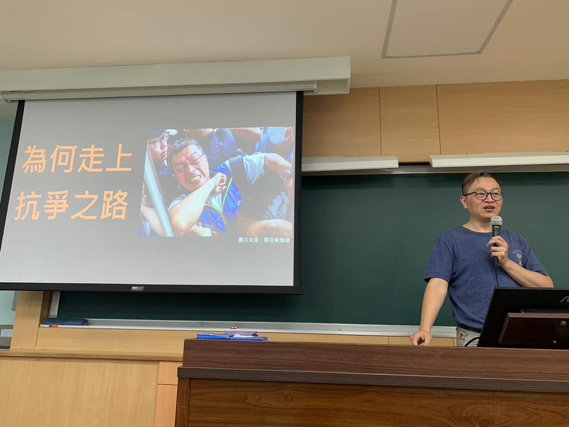

中鋼工會王慶宏理事長
11月20日，我們與中鋼運通工會合作舉辦一場對台大學生的社課講座。社課中，王慶宏理事長生動地描述了船員面臨的工作環境與各種因資方打壓而產生的問題，讓同學們能更全面地理解船員的困境，對於一些船員生活的細節刻劃更是栩栩如生。

中鋼工會陳柏謙研究員
隨後，陳柏謙研究員說明了公司剝奪船員基本權利的手段以及中鋼運通對法律的曲解，並導致船員們工作權、生存權嚴重受損，於是發起抗爭的原因。
台監青的講者
最後再以台灣監督企業青年行動的宣講做結尾，論述工學聯合的重要性與必要性，以及說明我們當前已經在展開的行動。讓大家可以了解到，勞權議題、學生議題以及其他的社會議題相互結合的可行性與展望。
我們的展望
期望未來能在更多學校宣講，也請大家關注 最近復社的臺大勞工社 NTU LaborClub，期待勞工社有更多關注勞權議題的社課。